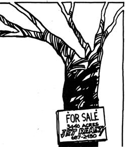

As a broker and realtor, I read with interest Les Scher's comments on my occupation (reprinted in MOTHER NO. 27). I've seen a good deal of venality during my two years of work in Vermont's real estate market and in a superficial sense, at least agree with most of what Scher said.
On the other hand, I've also seen a lot of personal tragedies result when buyers of property bypassed professional aid. Many folks aren't aware, for example, that in northern New England it's easy to find a 100-acre parcel of pasture and woodland that looks lovely even to an experienced land expert yet doesn't have one patch of soil thicker than 24 inches from surface to hardpan or bedrock. While it's true that the average salesman or broker may be less than ethical, people should remember that the same fact applies to the average owner who sells land directly. I should also point out that in some areas members of my profession are more highly qualified than Scher suggests. Take his statement that "brokerage laws are not very detailed and licenses are easy to obtain". Here in Vermont, at least, that's certainly not true. When I took my exam, I found it more difficult than any of the finals I sweated through at Harvard 25 years ago.
Still, even though there are a good number of honest brokers and realtors in my part of the state, a majority lack thoroughness and don't really grasp the tremendous complexity of .the real estate business. Very few understand the thousands of hours of study a good agent puts in, or the long working days that earn him a living. In the United States as a whole, only one person out of every ten who become licensed is still active in the field ten years later.
Well, then, should folks in the market for land deal with a broker or not? Decidedly yes! There's absolutely no question that the best way to find the property you want is through the help of an established agent. The problem is to find one who is both honest and knowledgeable and it's really not that difficult. Ask at banks, general stores, and among the local residents. Be careful, though, not to settle on a man or woman in the field just because that person happens to be "very nice". This business is just so darn complicated that niceness is no substitute for expertise.
Once you've found a broker who knows the land in his area and has a good reputation, you'll probably be pleasantly surprised to find him urging you not to rush into any decision. He may even decline to show you dozens of listings he knows of simply because they are overpriced or problem properties. While it's true that real estate agents usually represent the sellers of land, the better professionals get around this by
[1] not taking on acreage they consider too expensive and, if trapped into listing such "white elephants", by [2] not showing them to potential buyers.
If you want to, incidentally, it's quite legal to retain the broker yourself (you, the purchaser, not the property owner), if you're willing to pay the commission fee. It's a source of amazement to me that this isn't done more frequently. Either way, a good agent will certainly welcome all the questions Scher recommends asking and will probably enjoy working with an intelligent, careful buyer.
Another mark of a reputable broker is that he won't ignore you just because your bankroll is small. This is one place in the area of financing where I found Scher's comments utterly superficial. There are dozens of options open to a responsible buyer, and a knowledgeable agent spends hundreds of hours keeping abreast of them. Terms available are as important as the selling price on a parcel of land often more so. Be open to suggestions from your agent in this regard. He'll readily disagree with you if he sees that you're being unrealistic or putting yourself into a dangerous financial position.
To summarize: I agree with Scher's major points, but I think he's wrong to ignore the tremendous service a responsible agent can offer. The best solution to the problems involved in buying property, I'm convinced, is to find a good broker and to put your trust in him and him alone. This is no more than an honest, hard-working person in any field deserves.
|
 |
|
|